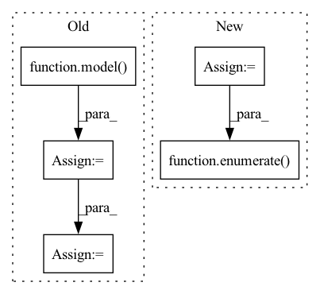

Pattern ID :5935

Before Change
inputs = model.preprocess(batch_data, device)
// scores: B x N x num_classes
scores = model(inputs)
labels = batch_data[1]
scores, labels = self.filter_valid(scores, labels, device)
logp = torch.distributions.utils.probs_to_logits(
scores, is_binary=False)
loss = criterion(logp, labels)
acc = accuracy(scores, labels)
iou = intersection_over_union(scores, labels)
After Change
preprocess=model.preprocess,
transform=model.transform,
shuffle=True)
valid_loader = DataLoader(
train_split,
batch_size=cfg.val_batch_size,
shuffle=True,
collate_fn=batcher.collate_fn)
optimizer = torch.optim.Adam(model.parameters(), lr=cfg.adam_lr)
scheduler = torch.optim.lr_scheduler.ExponentialLR(
optimizer, cfg.scheduler_gamma)
self.optimizer, self.scheduler = optimizer, scheduler
first_epoch = self.load_ckpt(model.cfg.ckpt_path, True)
writer = SummaryWriter(join(cfg.logs_dir, cfg.train_sum_dir))
log.info("Started training")
for epoch in range(0, cfg.max_epoch + 1):
print(f"=== EPOCH {epoch:d}/{cfg.max_epoch:d} ===")
model.train()
self.losses = []
self.accs = []
self.ious = []
step = 0
for idx, inputs in enumerate(tqdm(train_loader,
desc="training")):
results = model(inputs["data"])
loss, gt_labels, predict_scores = model.loss(
Loss, results, inputs, device)
optimizer.zero_grad()
loss.backward()
optimizer.step()
acc = Metric.acc(predict_scores, gt_labels)
iou = Metric.iou(predict_scores, gt_labels)
self.losses.append(loss.cpu().item())
self.accs.append(acc)
self.ious.append(iou)
step = step + 1
scheduler.step()
// --------------------- validation
model.eval()
self.valid_losses = []
self.valid_accs = []
self.valid_ious = []
step = 0
with torch.no_grad():
for idx, inputs in enumerate(tqdm(valid_loader,
desc="validation")):
results = model(inputs["data"])
loss, gt_labels, predict_scores = model.loss(
Loss, results, inputs, device)
In pattern: SUPERPATTERN
Frequency: 3
Non-data size: 5
Instances
Fragment ID: 20853343
Project Name: intel-isl/open3d-ml
Commit Name: 89937ebfc8ba0757f2626e88d4243cc88fd61a84
Time: 2020-08-20
Author: yilingq@umd.edu
File Name: ml3d/torch/pipelines/semantic_segmentation.py
M Class Name: SemanticSegmentation
N Class Name: SemanticSegmentation
M Method Name: run_train(2)
N Method Name: run_train(2)
M Parent Class:
N Parent Class:
M File Name: ml3d/torch/pipelines/semantic_segmentation.py
N File Name: ml3d/torch/pipelines/semantic_segmentation.py
M Start Line: 159
M End Line: 268
N Start Line: 157
N End Line: 258
'>
Before Change
self.valid_ious = []
step = 0
with torch.no_grad():
for batch_data in tqdm(valid_loader,
desc="validation",
leave=False):
inputs = model.preprocess(batch_data, device)
// scores: B x N x num_classes
scores = model(inputs)
labels = batch_data[1]
scores, labels = self.filter_valid(scores, labels, device)
logp = torch.distributions.utils.probs_to_logits(
scores, is_binary=False)
loss = criterion(logp, labels)
acc = accuracy(scores, labels)
iou = intersection_over_union(scores, labels)
After Change
preprocess=model.preprocess,
transform=model.transform,
shuffle=True)
valid_loader = DataLoader(
train_split,
batch_size=cfg.val_batch_size,
shuffle=True,
collate_fn=batcher.collate_fn)
optimizer = torch.optim.Adam(model.parameters(), lr=cfg.adam_lr)
scheduler = torch.optim.lr_scheduler.ExponentialLR(
optimizer, cfg.scheduler_gamma)
self.optimizer, self.scheduler = optimizer, scheduler
first_epoch = self.load_ckpt(model.cfg.ckpt_path, True)
writer = SummaryWriter(join(cfg.logs_dir, cfg.train_sum_dir))
log.info("Started training")
for epoch in range(0, cfg.max_epoch + 1):
print(f"=== EPOCH {epoch:d}/{cfg.max_epoch:d} ===")
model.train()
self.losses = []
self.accs = []
self.ious = []
step = 0
for idx, inputs in enumerate(tqdm(train_loader,
desc="training")):
results = model(inputs["data"])
loss, gt_labels, predict_scores = model.loss(
Loss, results, inputs, device)
optimizer.zero_grad()
loss.backward()
optimizer.step()
acc = Metric.acc(predict_scores, gt_labels)
iou = Metric.iou(predict_scores, gt_labels)
self.losses.append(loss.cpu().item())
self.accs.append(acc)
self.ious.append(iou)
step = step + 1
scheduler.step()
// --------------------- validation
model.eval()
self.valid_losses = []
self.valid_accs = []
self.valid_ious = []
step = 0
with torch.no_grad():
for idx, inputs in enumerate(tqdm(valid_loader,
desc="validation")):
results = model(inputs["data"])
loss, gt_labels, predict_scores = model.loss(
Loss, results, inputs, device)
'>
Fragment ID: 20853340
Project Name: intel-isl/open3d-ml
Commit Name: 89937ebfc8ba0757f2626e88d4243cc88fd61a84
Time: 2020-08-20
Author: yilingq@umd.edu
File Name: ml3d/torch/pipelines/semantic_segmentation.py
M Class Name: SemanticSegmentation
N Class Name: SemanticSegmentation
M Method Name: run_train(2)
N Method Name: run_train(2)
M Parent Class:
N Parent Class:
M File Name: ml3d/torch/pipelines/semantic_segmentation.py
N File Name: ml3d/torch/pipelines/semantic_segmentation.py
M Start Line: 159
M End Line: 268
N Start Line: 157
N End Line: 258
'>
Before Change
"""
true_labels = []
pred_labels = []
for i, l, p in tqdm(target_data_set, total=len(target_data_set)):
true_labels.append(l)
target_img_tensor = i.unsqueeze(0)
// target_img_tensor = i.unsqueeze(1)
with torch.no_grad():
model.to(device)
target_img_tensor.to(device)
model.eval()
out = model(target_img_tensor)
ps = torch.exp(out)
prediction_percentages = (ps.cpu().numpy()[0]).tolist()
pred = prediction_percentages.index(max(prediction_percentages))
pred_labels.append(pred)
cm = metrics.confusion_matrix(true_labels, pred_labels)
After Change
true_labels = []
pred_labels = []
model.to(device)
target_data_loader = torch.utils.data.DataLoader(target_data_set,batch_size=16,shuffle=False)
for i, (imgs, labels, path) in tqdm(enumerate(target_data_loader), total=len(target_data_loader)):
imgs = imgs.to(device)
labels = labels.to(device)
true_labels = true_labels+labels.tolist()
'>
Fragment ID: 20853355
Project Name: radtorch/radtorch
Commit Name: 8122128d39112011e292071d336ed2e52abd8008
Time: 2020-03-01
Author: elbanan@users.noreply.github.com
File Name: radtorch/visutils.py
M Class Name: AnonimousClass
N Class Name: AnonimousClass
M Method Name: show_confusion_matrix(6)
N Method Name: show_confusion_matrix(6)
M Parent Class:
N Parent Class:
M File Name: radtorch/visutils.py
N File Name: radtorch/visutils.py
M Start Line: 312
M End Line: 327
N Start Line: 312
N End Line: 328